| 角色 | 关注点 |
|---|---|
| Coding Agent | 按 plan 实现 |
| Review Agent | 找 bug、回归、缺测试、证据断点 |
| Human | 判断风险和下一层验证 |
分离的价值：LLM的workaound特性不可避免，开启新上下文避免agent自我欺骗
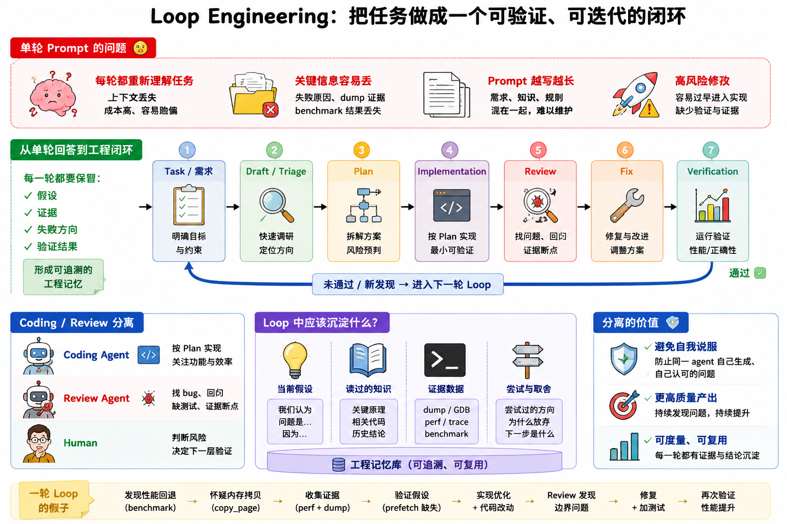
Raw sources
↓
Structured wiki pages
↓
Query indexes
↓
Task-specific retrieval
RAG 是每次问时重新找资料。
Wiki 是把资料消化成可维护的中间表示。
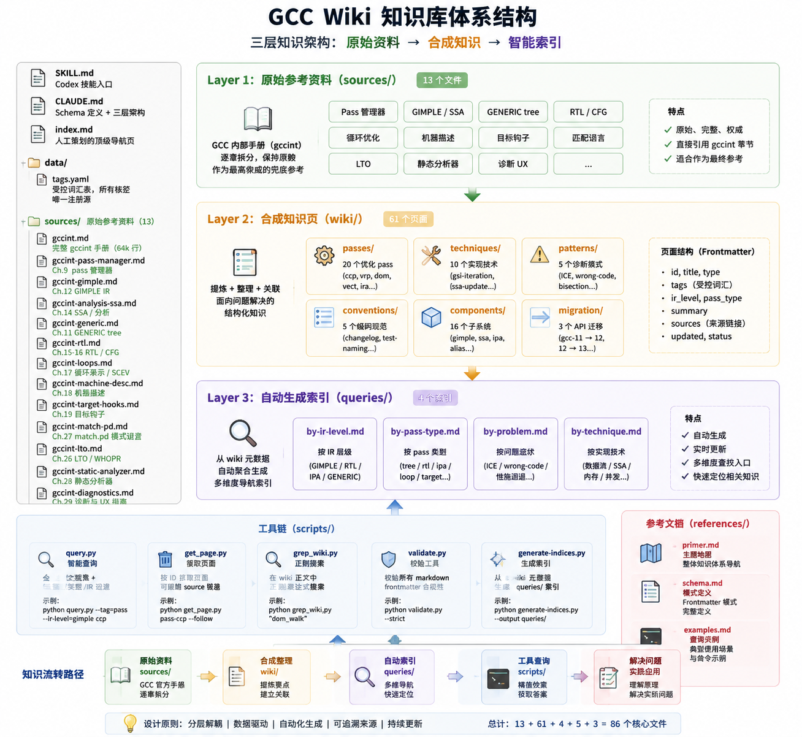
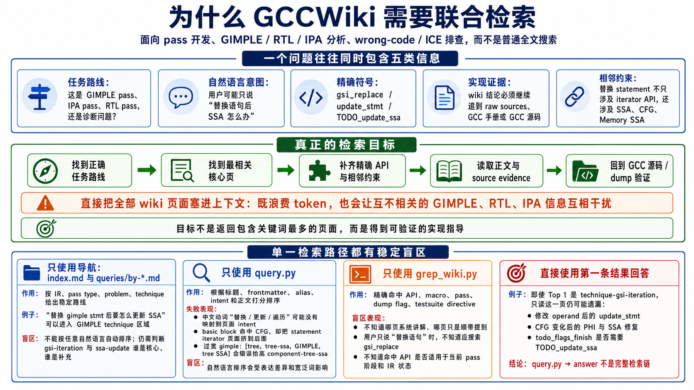
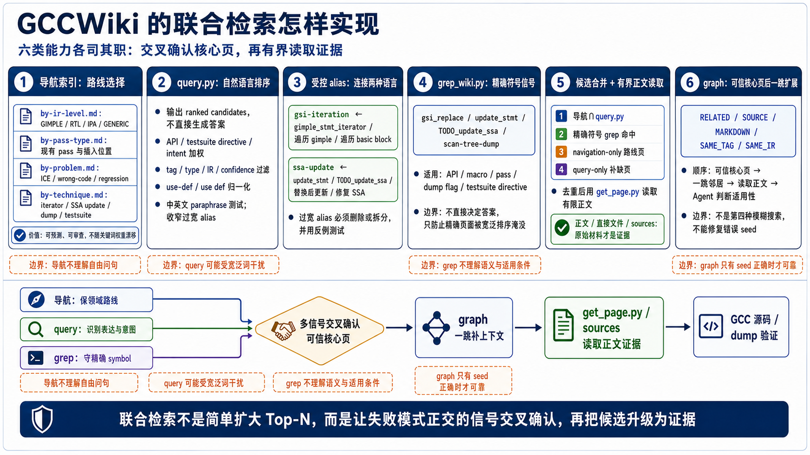
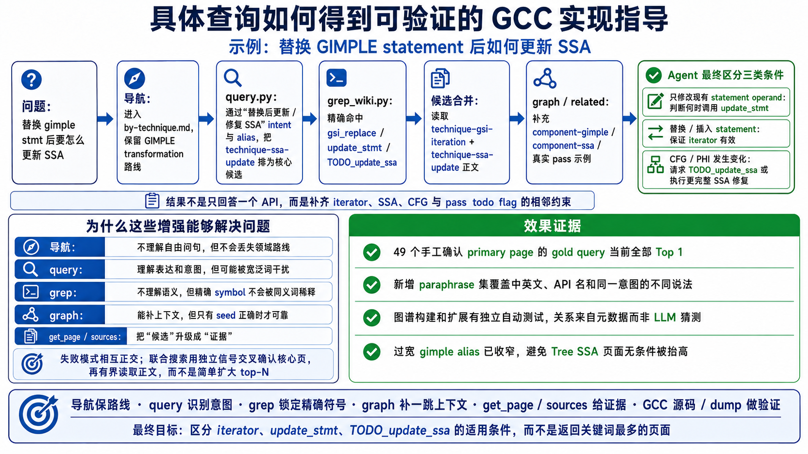
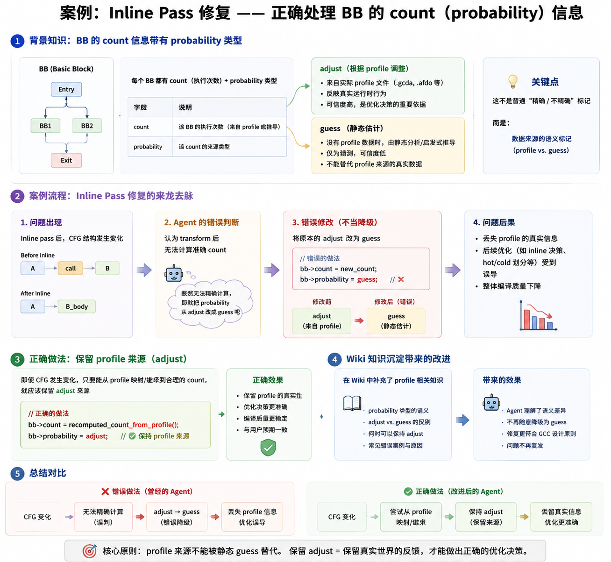
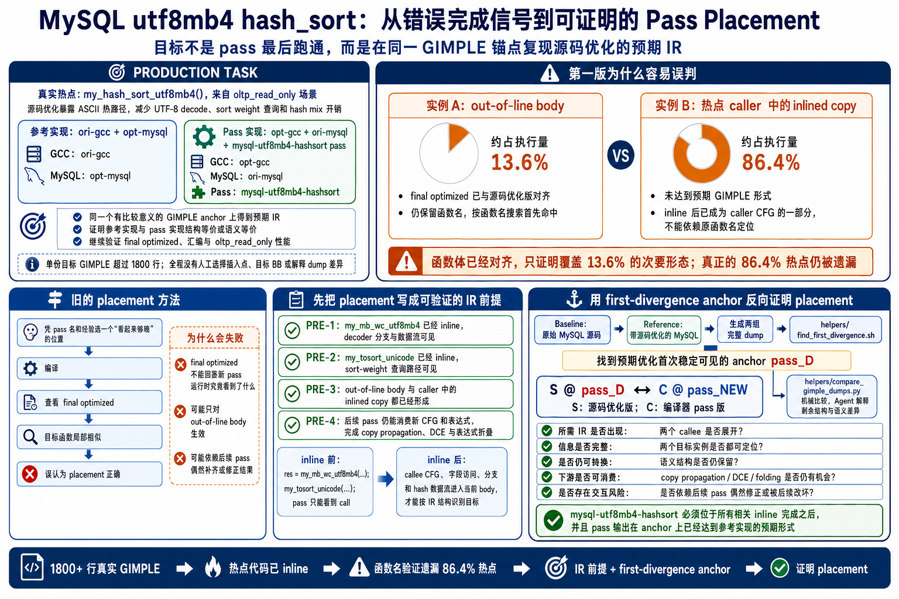
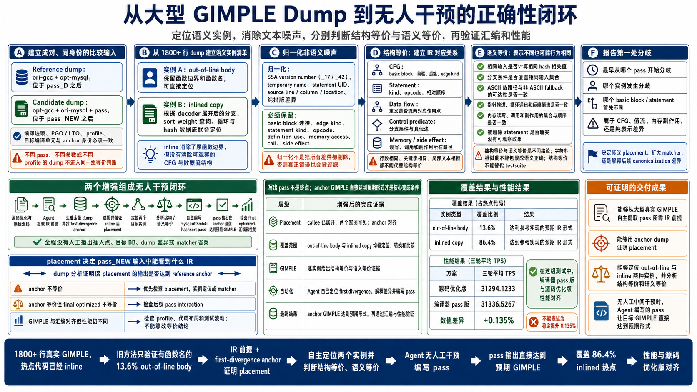
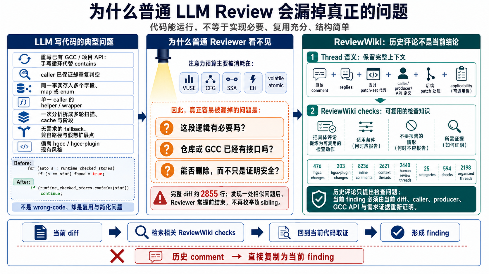
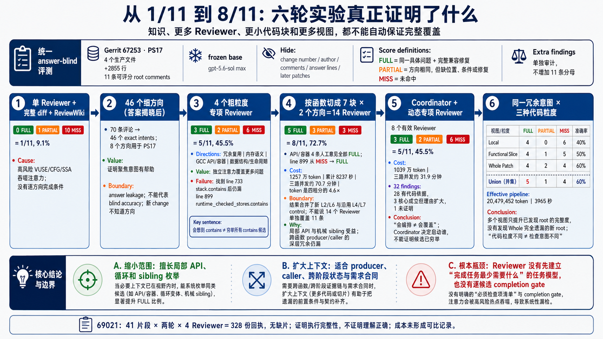
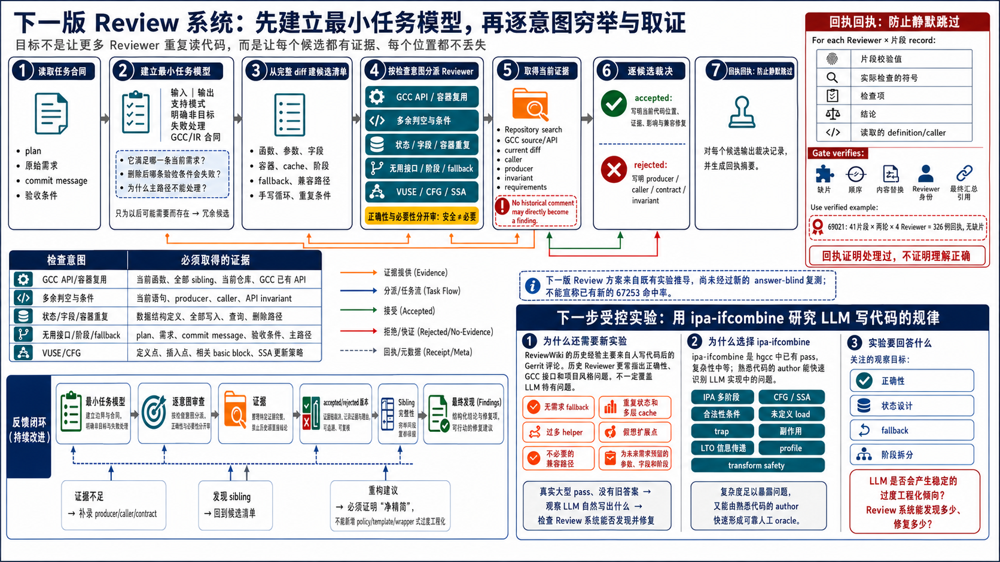
docs/draft.mddocs/triage.md| 组成 | 作用 |
|---|---|
| draft / triage / plan | 把口头任务变成可审查设计 |
| GCCWiki | agent 应该知道什么 |
| GCCSkill | agent 应该怎么操作 |
| review系统 | 保证代码质量 |
GCCWiki 是知识库
GCCSkill 是操作手册
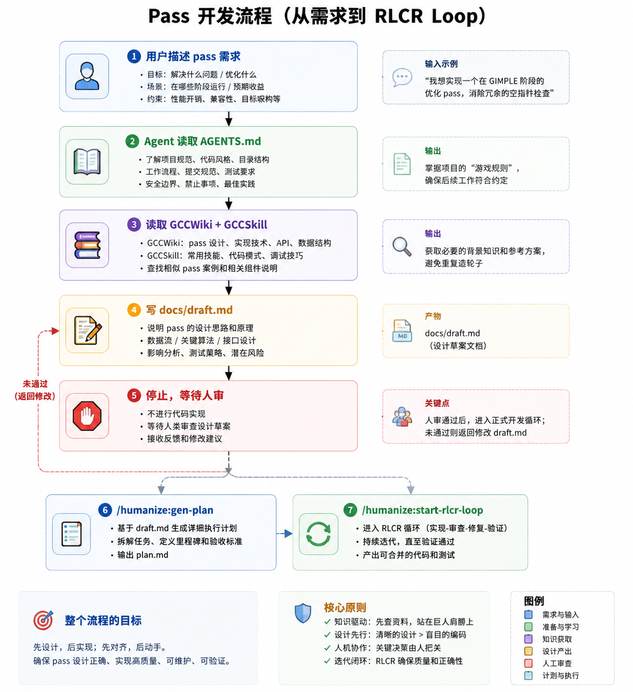
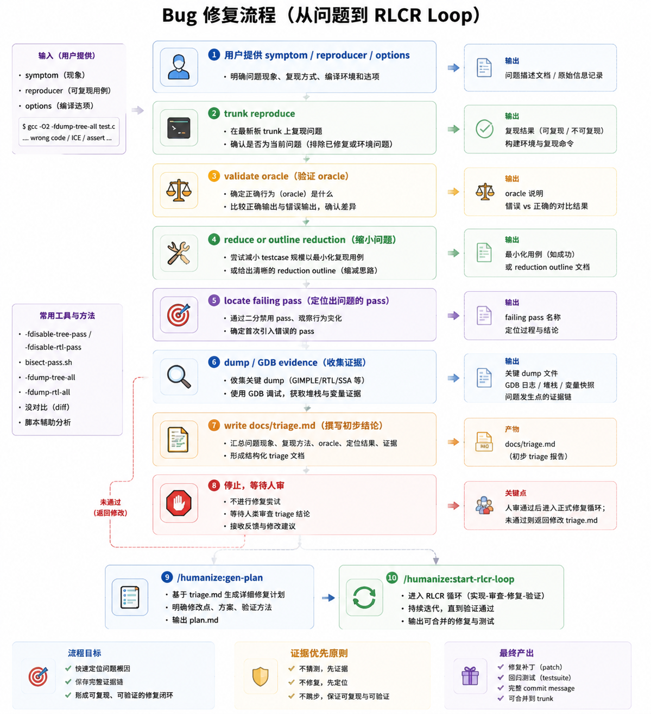
诊断阶段不改 GCC 源码。
docs/draft.md 要回答什么？docs/triage.md 要回答什么？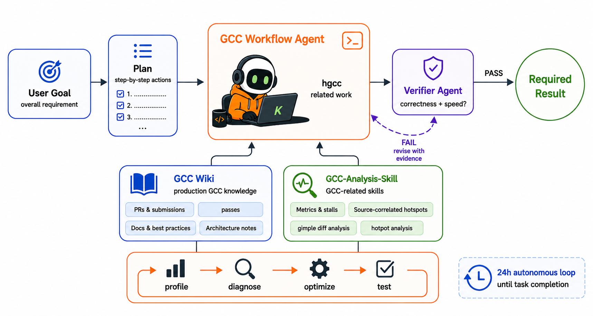